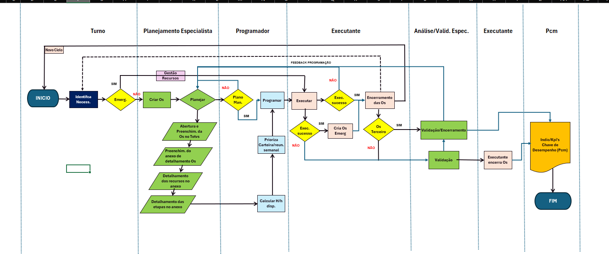

PLANEJAMENTO SEMANAL DE MANUTENÇÃO
Backlog e Programação de Manutenção
Filtros do backlog
Fluxo obrigatório: 02AR → 03RP → 04RS → 04SC. Em 04RS, informe semana, dia e as horas de cada profissional. Depois use Programar ordem e salve para registrar quem modificou.
Programação semanal de manutenção
Lista completa da semana
| Dia | Ordem | Área | Bem | Serviço / especialidade | Profissional | Matrícula | Horas |
|---|
| Semana | Dia | Funcionário | Matrícula | Área do funcionário | Horas | Ordem | Tipo | Especialidade | Status da ordem | Apontamento | Executante na base |
|---|
Capacidade diária da equipe

Legenda das etapas e tags
Fontes e regras desta página
Fontes: Base de dados Power bi -.xlsm, Não_Periodicas_Power_bi_corrigido.xlsm, BENS AC2.xml e cadastro de funcionários da planilha de treinamentos.
- Entram no backlog somente ordens com situação Pendente.
- A lista mostra somente funcionários da manutenção e permite cadastrar obra de terceiro com nome, empresa e identificação.
- O limite é de 8 horas programadas por funcionário em cada dia.
- Ordens Executadas ou Encerradas aparecem como apontadas após a atualização das planilhas.
- Etapas, flags, programação, mão de obra e a identificação de quem salvou ficam registradas neste navegador e seguem na exportação.